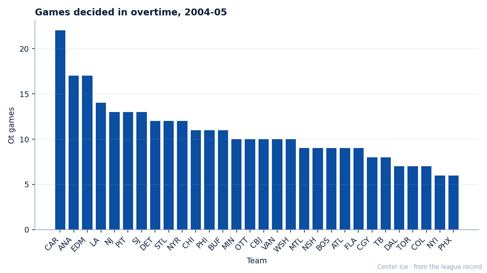

LA
LANumbers Game: Carolina has played 22 games past regulation, the most in the league by 5
No team goes to overtime more than the Hurricanes. The question is whether that helps or hurts in April.
 Ray CallumSenior correspondent · Home Ice Network
Ray CallumSenior correspondent · Home Ice Network
The  Carolina Hurricanes Hurricanes have played 22 games past regulation this season, 11 wins and 11 losses in those 22 games. No other club is above 17. The league-wide rate puts roughly one game in five into overtime; Carolina sits at 40.0 percent, double the field.
Carolina Hurricanes Hurricanes have played 22 games past regulation this season, 11 wins and 11 losses in those 22 games. No other club is above 17. The league-wide rate puts roughly one game in five into overtime; Carolina sits at 40.0 percent, double the field.

A team that reaches 3-on-3 collects a consolation point on a night it would otherwise leave empty-handed. Carolina's 11 overtime wins and 11 overtime losses mean the Hurricanes have collected at least 1 point in all 22 games that went past regulation.
The  New York Islanders
New York Islanders  Phoenix Coyotes end of the table goes the other way. New York and Phoenix have each played 6 overtime games, 11.3 percent of their schedules. Both sit outside a playoff spot: New York is 2 points behind 8th in the East, Phoenix 4 points behind 8th in the West.
Phoenix Coyotes end of the table goes the other way. New York and Phoenix have each played 6 overtime games, 11.3 percent of their schedules. Both sit outside a playoff spot: New York is 2 points behind 8th in the East, Phoenix 4 points behind 8th in the West.
The extremes and the teams around them
Carolina's 40.0 overtime rate is both a schedule artifact and a roster trait. The Hurricanes have the league's deepest penalty-killing rotation, which forces 4-on-5 situations that generate late-game drama. Their 11 overtime losses suggest a club that survives regulation deficits often enough to get to 3-on-3, then does not win the shootout.
At the top of the West,  Edmonton Oilers has played 17 overtime games (11 OTW, 6 OTL) for a 31.5 rate. That record is what has kept Edmonton at 72 points and 1st in the conference despite a goal differential of minus 4. The
Edmonton Oilers has played 17 overtime games (11 OTW, 6 OTL) for a 31.5 rate. That record is what has kept Edmonton at 72 points and 1st in the conference despite a goal differential of minus 4. The  Mighty Ducks of Anaheim Ducks, also at 17 overtime games, carry the opposite profile: 6 OTW and 11 OTL. Anaheim wins fewer overtime games than it loses, which explains why 65 points feels too low for a club 5 games under .500 in regulation.
Mighty Ducks of Anaheim Ducks, also at 17 overtime games, carry the opposite profile: 6 OTW and 11 OTL. Anaheim wins fewer overtime games than it loses, which explains why 65 points feels too low for a club 5 games under .500 in regulation.
| Club | OT games | OTW | OTL | Rate |
|---|---|---|---|---|
| CAR | 22 | 11 | 11 | 40.0% |
| ANA | 17 | 6 | 11 | 31.5% |
| EDM | 17 | 11 | 6 | 31.5% |
| LA | 14 | 8 | 6 | 25.9% |
| NJ | 13 | 8 | 5 | 24.5% |
| NYI | 6 | 3 | 3 | 11.3% |
| PHX | 6 | 1 | 5 | 11.3% |
For Carolina, the schedule does not soften. The Hurricanes host Mighty Ducks of Anaheim tonight, travel to  Dallas Stars on February 11, then face
Dallas Stars on February 11, then face  Washington Capitals on February 14. All three are high-volume overtime clubs. If the pattern holds, the 22 becomes 25 before the month is out.
Washington Capitals on February 14. All three are high-volume overtime clubs. If the pattern holds, the 22 becomes 25 before the month is out.